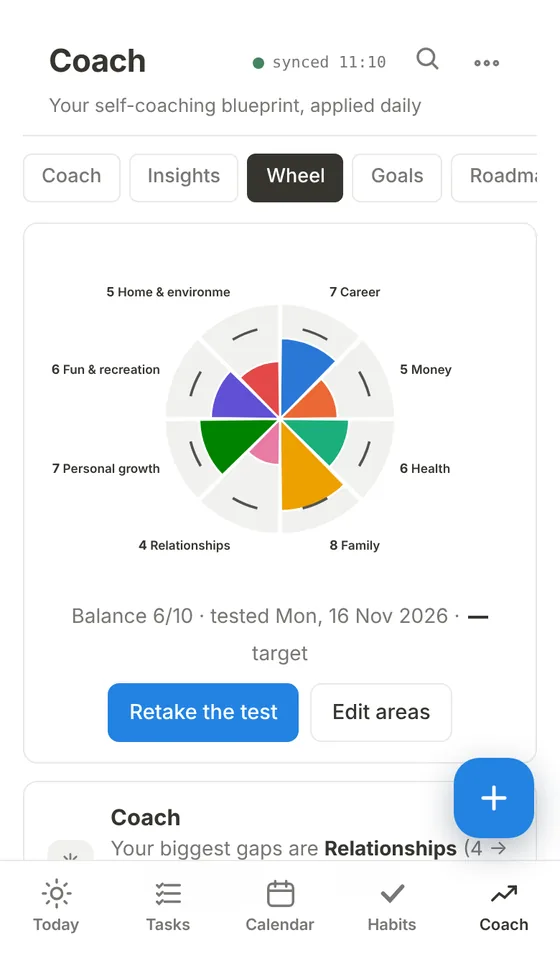
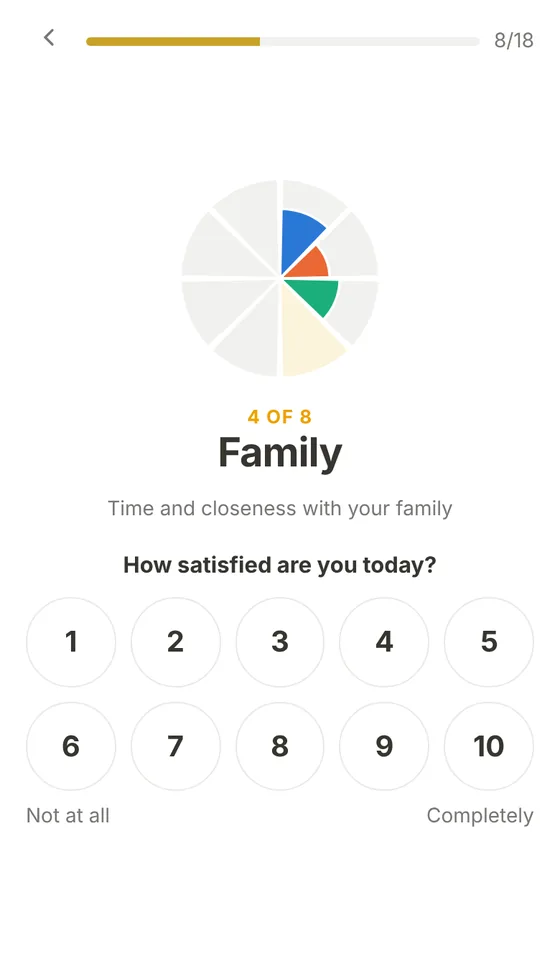
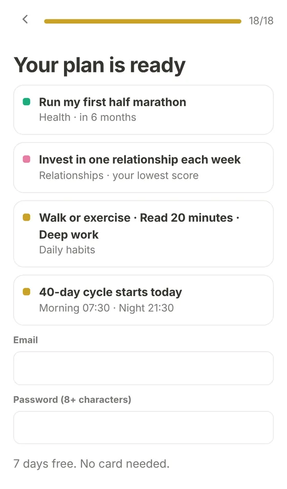
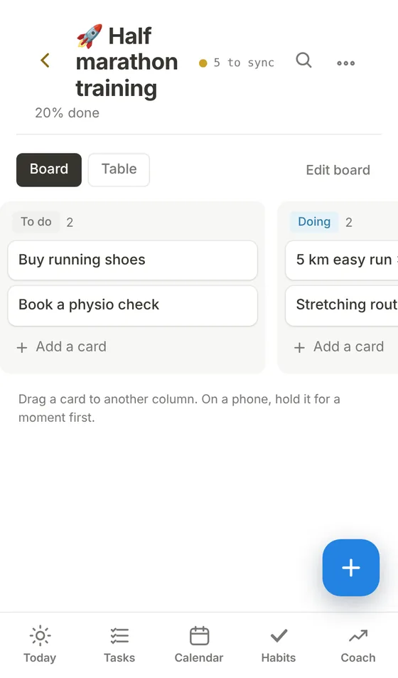
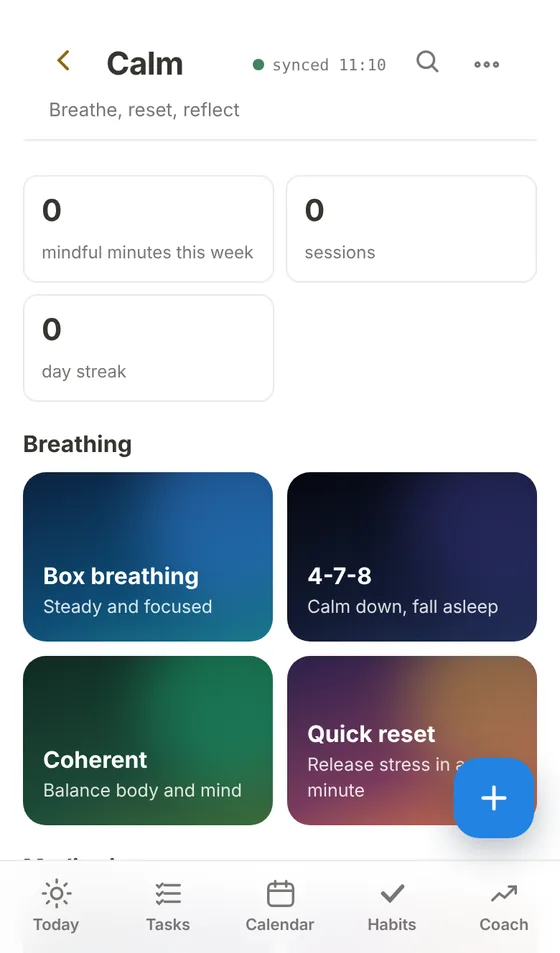
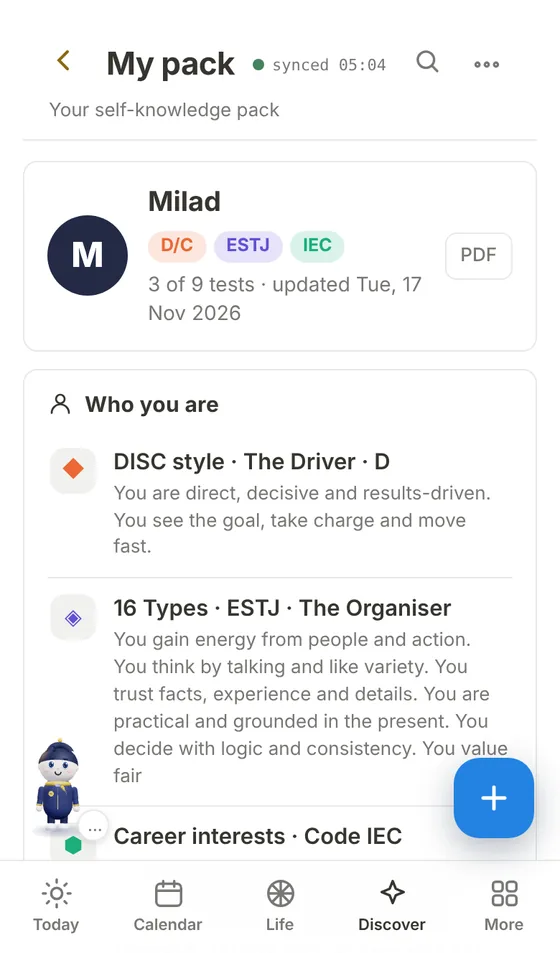
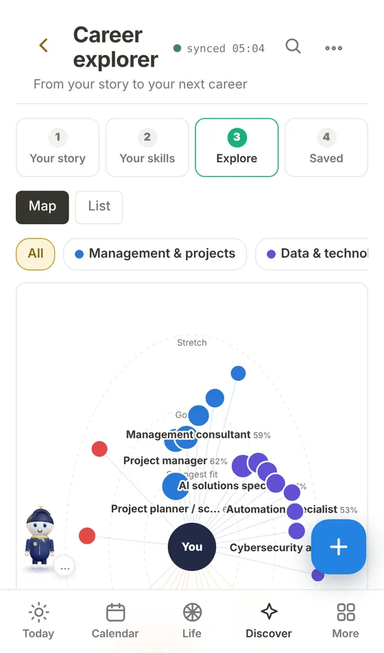
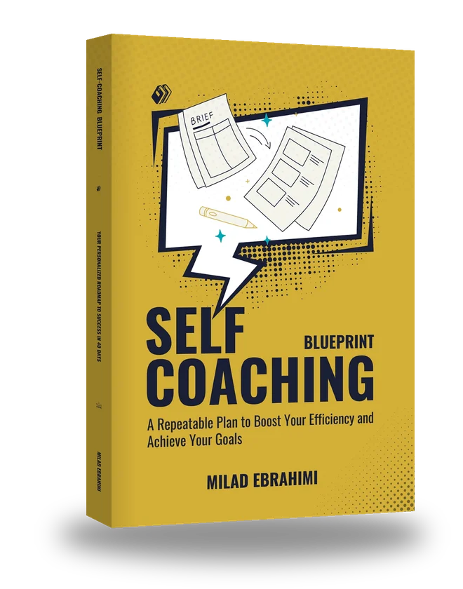

Your coach,
one minute a day.
Take the Wheel of Life test, get a personal 40-day plan, and keep it alive with a one-minute Morning and Night Balance. Habits, focus, calm and progress in one calm, visual app.
7 days free · no card needed · iPhone, iPad, Android and computer


Test first. Then a plan. Then one minute a day.

Take the test
Type your name, then just tap: your focus, your first goal and a quick Wheel of Life. About one minute. Later, take the full 80-question Balance Wheel Test from the book.

Get your plan
Your goal, your weakest area, your first 40-day cycle, habits and today's Top 3, ready before you sign up.

One minute, morning and night
Plan the day, close the day, tick your habits. Your coach message and rings update through the day.
The tools a coach would give you
Wheel of Life test
Score the eight areas of your life in two minutes. See your balance as a wheel and watch it change from cycle to cycle.
40-day cycles
Pick one to three areas, set one goal each and commit for 40 days. Long enough to change, short enough to stay focused.
Morning & Night Balance
One minute in the morning to set your focus and Top 3. One minute at night to score the day and plan tomorrow.
Day timeline and calendar
Your day as a visual timeline, plus a calendar that feels like the one you already use. Sync to your phone calendar.
Habits and streaks
Pick the days, tick with one tap, keep your streaks. A 12-week heatmap shows the truth.
Boards for every project
A Trello-style board and a Notion-style table for each project, with its own daily tasks.
Focus and Calm
A calm full-screen focus timer with ambient sound, breathing exercises and short guided reflections.
Insights
Clear charts of your day scores, focus time, habits and balance over 7, 30 or 90 days.
Self-discovery tests
DISC, 16 types, Big Five, Enneagram, career interests, values, conflict style and emotional intelligence. Every result adds to your personal pack.
Career explorer
Turn your experience into a skill fingerprint, see the careers that fit you on a visual map and make the best one your next goal.
Rings, levels and widgets
Close three daily rings, earn points and badges, and keep your progress on your home screen with live widgets.
Plan like Notion. Move like Trello. Feel like a calm app.
Every project gets its own board and table. Your day becomes a timeline. When it gets heavy, take two minutes to breathe. ME.Coach keeps the whole picture, so you only think about the next step.
- Drag cards between To do, Doing, Waiting and Done
- Breathing exercises and short guided reflections
- Live widgets for your iPhone, iPad and desktop
- Sign in with Face ID or Google


A guide that walks with you, every day.
Emi lives in your app. Emi waves in the morning, cheers when you keep a habit, breathes with you in Calm, celebrates every finished test and points you to your next tiny step.
- Reacts to what you do, all day
- Suggests your next step in each life area
- Sits with you during every test
Drag Emi to see every side. Tap for a reaction.
Nine tests. One personal pack.
DISC, 16 types, Big Five, Enneagram, career interests, values, conflict style and emotional intelligence. ME.Coach turns your answers into one pack: who you are, how you work best, how to deal with other people, and tiny steps for each area of your life.
- A “How to talk to me” card you can share with your team
- Career fit from your interests and your experience
- Micro-actions for all 8 areas of the Wheel of Life


From your story to your next career.
Add the roles you have had and what you want more of. ME.Coach builds your skill fingerprint and career identity, maps the careers that fit you, shows the skills you have and the ones to build, and turns your choice into a goal with milestones and micro-actions.


Self-Coaching Blueprint
A repeatable plan to boost your efficiency and achieve your goals. The balanced goal-setting system, the Wheel of Life test and the practical tables behind ME.Coach, in 102 pages.
PDF · 1.3 MB · English · First edition 2025 · ISBN 978-622-4836-62-5
Simple plans. Start free.
Pro Monthly
Full ME.Coach, month by month.
- Wheel of Life test and 40-day cycles
- Morning & Night Balance
- 9 self-discovery tests and your personal pack
- Career explorer
- Habits, focus, calm, boards and widgets
- Cancel any time
Pro Yearly
A full year of cycles, about 30% cheaper.
- Everything in Pro Monthly
- Nine 40-day cycles a year
- Priority email support
- Best value
Coaching
The app plus a real coach.
- Everything in Pro
- One 1:1 session a month with Milad (online, 45 min)
- Monthly plan and Wheel review
- Limited places
Every plan starts with 7 days free. No card needed to start. Cancel any time.
Good to know
What is ME.Coach?
A daily self-coaching app. You take the Wheel of Life test, get a personal plan for the next 40 days, and spend one minute every morning and night to stay on track. It applies the method from the book Self-Coaching Blueprint by Milad Ebrahimi.
How does the free trial work?
You get every feature for 7 days. No card is needed to start. After 7 days you choose a plan to keep editing. Everything you created stays safe and readable.
Does it work on iPhone, iPad, Android and computers?
Yes. ME.Coach runs in the browser and installs like an app: on iPhone or iPad open it in Safari, tap Share, then Add to Home Screen. On Android and computers use Install in Chrome or Edge. It also works offline.
How do I sign in?
With Face ID or Touch ID (passkeys), with Google, or with email and password. We recommend setting up Face ID right after you sign up.
Who can see my data?
Only you. Each account has its own private space. Nothing is sold, shared or used for advertising. You can download all your data at any time.
Can I cancel?
Yes, at any time. Your plan stays active until the end of the period you paid for.
Your next 40 days can look different.
Start with the free Wheel of Life test. Two minutes. No card.
Take the free test